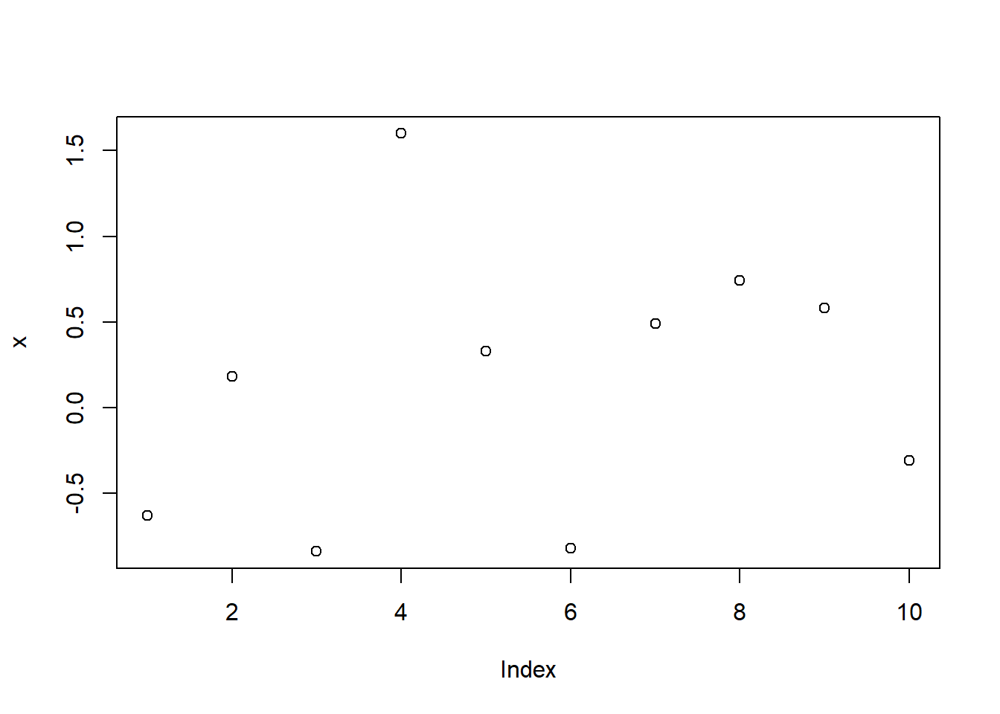
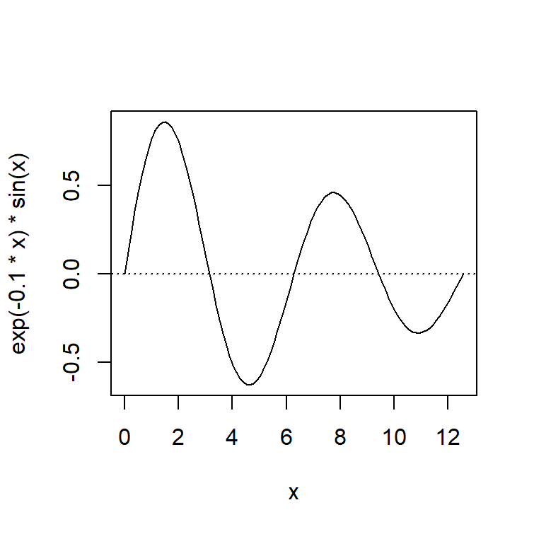
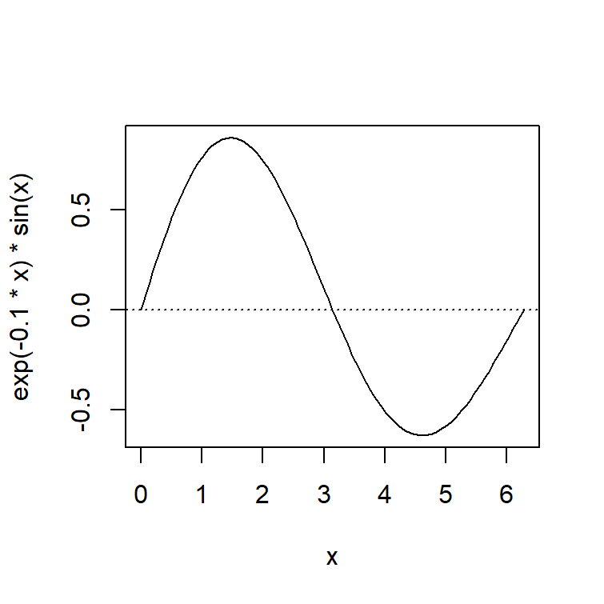
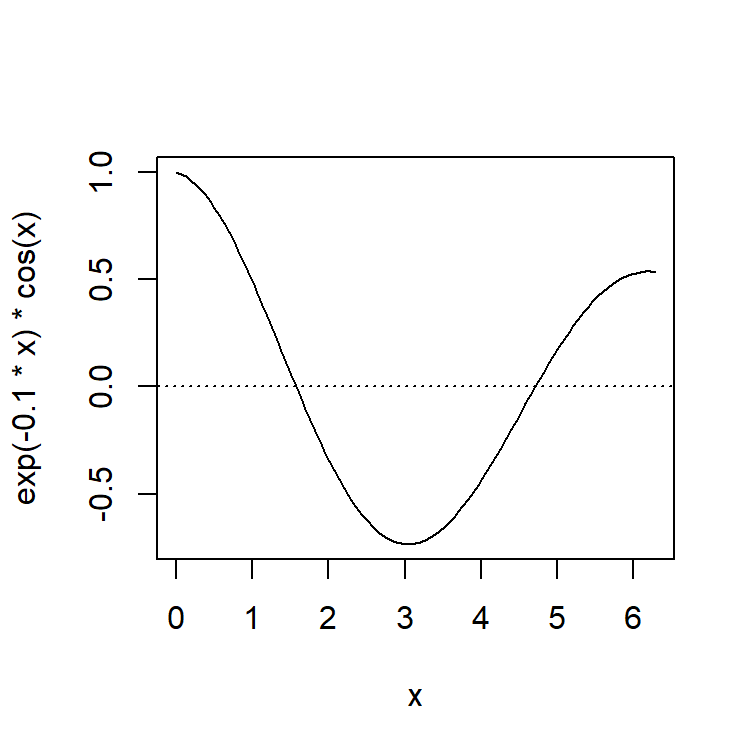
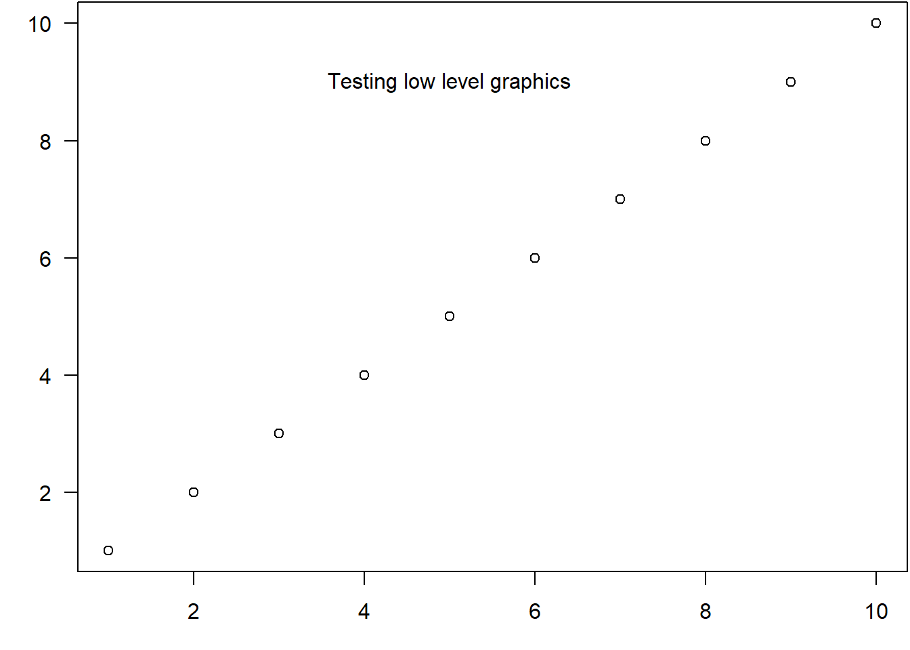

22 R Markdown文件格式
22.1 R Markdown文件
借助于R的knitr和rmarkdown扩展包的帮助， 可以在Markdown格式的源文件中插入R代码， 使得R代码的结果能够自动插入到最后生成的研究报告中。 这种格式称为R Markdown格式，简称为Rmd格式， 相应的源文件扩展名为.Rmd。 输出格式可以是HTML、docx、pdf、beamer等。 R Markdown的基础格式是markdown格式， 严格说来是Pandoc软件支持的增强版的markdown格式， 比如， 支持LaTex格式的数学公式， 支持各种编程语言语法彩色加亮显示，等等。
knitr的详细文档参见网站knitr文档。 关于R Markdown可参考专著(Xie, Allaire, and Grolemund 2019)和(Xie, Dervieux, and Riederer 2020)。 RStudio网站提供了一个R Markdown使用摘要下载： (rmarkdown-2.0.pdf)[rmarkdown-2.0.pdf]。 Pandoc的文档见pandoc网站。
一个Rmd文件中包含元数据(metadata)、正文内容和R代码三种成分， 比如，下面是一个简单的Rmd文件样例：
这里是正文段落。
段落中仍可以利用一般的Markdown语法，
比如在两边用双星号表示**粗体加重**，
在用两边反单撇号表示代码，如`y <- sin(x)`。
下面是一个R代码段，有文字输出：
```{r}
set.seed(1)
x <- round(rnorm(10), 2)
print(x)
```
下面是一个R代码段，有图形输出：
```{r}
plot(x)
```
下面是一个R代码段，
有富文本表格输出：
```{r}
knitr::kable(as.data.frame(x))
```
在文字段落内部也可以有代码，
比如，x的第一个元素值为`r x[1]`。
```在文件开头用三个减号组成的行包围的内容称为元数据， 可以用来规定文章标题、作者、日期、输出格式、输出设置等属性。 见22.11。
因为中文需要一些特殊的设置， 以及在网络条件不好的条件下支持数学公式显示， 本书作者提供了一个Rmarkdown模板， 下载链接为:
其中的Rmarkdown子目录包含了所需模板， 其它子目录有一些别的模板， 为了在本地支持网页中的数学公式显示还有一个MathJax目录。
22.2 R Markdown文件的编译
RStudio是一个集成的R软件环境， 可以用来编辑和执行R程序， 这个软件也可以用来编辑和编译R Markdown格式的文件， 使得R Markdown格式的文件变得容易使用。 在RStudio中可以直接用一个快捷图标一次性地把R代码结果插入内容中并编译为HTML或MS Word docx格式， 还支持Markdown中LaTeX格式的数学公式。 建议使用RStudio软件作为R Markdown文件的编辑器。
在RStudio软件中，用菜单“File–New File–R Markdown”新建一个R Markdown文件，扩展名为.Rmd。
用快捷图标Knit可以将文件转换成HTML格式、PDF格式（需要安装LaTeX编译软件）、MS Word格式。
从HTML格式可以转换成PDF格式。 为此， 安装Google的Chrome浏览器， 在Chrome中打开HTML文件后， 然后选择菜单“打印”， 选打印机为“另存为PDF”， 然后选“更多设置”， 将其中的“缩放”改为自定义， 比例改为“90%”， 就可以将HTML网页转换成PDF， 其中的数学公式、表格、图形都可以比较好地转换。 注意，如果不缩小打印， 数学公式的编号以及较长的数学公式可能会被裁剪掉。
从Word文件也可以转换成PDF格式， 用MS Word软件的“文件-导出”或者“文件-另存为”功能即可。
如果想将R Markdown文件借助于LaTeX格式转换为PDF， 需要在系统中安装一个TeX编译器。 rmarkdown包从第1.9版本开始要求使用tinytex扩展包以及配套的TinyTeX软件包， 没有提供用本机原有的LaTex编译系统的选择， 如果不安装tinytex，编译为PDF格式时会出错。 关于TinyTeX的安装和使用参见22.12。
如果不借助于RStudio软件，
可以用R软件、knitr包、rmarkdown包、pandoc软件来完成R Markdown源文件的编译。
比如，假设test.Rmd是一个这样的R Markdown格式的文件，
注意一定要使用UTF-8编码保存，
可以在R或RStudio中运行如下命令以生成含有运行结果的html文件:
其中myfile.Rmd是源文件，
产生的HTML文件带有图形、支持数学公式。
在R或RStudio中可以用如下命令把.Rmd文件转化为MS Word docx格式:
使用RStudio软件使得这些任务可以一键完成， 而且有很好的数学公式支持， 所以建议编辑R Markdown文件还是使用RStudio软件。
用RStudio的Knit图标一键编译与用rmarkdown::render()命令编译有重要差别：
- 用Knit图标编译，Rmd文件中的程序会在一个崭新的会话中执行， 当前会话中已经定义的函数、变量、导入的扩展包不会影响到编译结果；
- 用
rmarkdown::render()编译， Rmd文件中的程序是在当前会话中执行的， 会带来一定的兼容性问题， 有可能在别人的环境下就不能正确执行或者会给出不同结果。 但是，rmarkdown::render()可以通过程序调用， 比如，循环地从同一个Rmd生成一系列不同的报告。 为了不让当前会话环境干扰结果， 可以人为地打开一个新会话。
22.2.1 编译的实际过程
编译Rmd文件，
一般是调用rmarkdown::render()函数执行任务。
编译的第一步，
会调用knitr包的knit()函数将代码段中的程序依次运行，
结果保存为一个临时.md文件中，
图形结果暂存在单独的图形文件中，
文字结果会直接保存在临时.md文件中。
编译的第二步，
调用外部程序Pandoc将临时的.md文件转换为要求的Word、HTML等输出格式；
如果要求的输出是pdf_document，
则会调用Pandoc先将临时的.md文件转换为一个中间的.tex文件，
然后利用tinytex包调用外部的TinyTex软件将.tex文件编译为PDF结果。
Pandoc是一个功能强大的文件转换程序， 可以在多种不同的文件格式之间转换， 具有丰富的选项。 对于markdown格式， Pandoc也提供了丰富的扩充功能， 最重要的是支持LaTeX格式的数学公式。 见21.4。
22.3 在R Markdown文件中插入R代码
插入的R代码分为行内代码与代码块。
行内代码的结果插入到一个段落中间，
代码以`r开头，以`结尾，
如`r sin(pi/2)`在结果中会显示为1。
为了原样显示一个反向单撇号，
可以在两边用双反向单撇号界定并用空格隔开内部的内容。
代码块则把结果当作单独的段落，
按照Markdown格式的规定，
代码块的前后需要有空行，
但是R Markdown实际上放松了这个要求，
允许前后不空行。
R代码段以单独的一行开头，
此行以三个反单撇号开始，
然后是{r}，如```{r}。
代码段以占据单独一行的三个反单撇号```结尾。
如
```{r}
set.seed(1)
x <- round(rnorm(10), 2)
print(x)
```结果将变成
## [1] -0.63 0.18 -0.84 1.60 0.33 -0.82 0.49 0.74 0.58 -0.31可以看出，代码段程序会被插入到最终结果中， 代码段的文本型输出会插入到程序的后面。
代码块也可以嵌入到引用、列表等环境中。
代码块中作的图将自动插入到当前位置。 下面的程序：
```{r}
plot(x)
```结果将显示为:

在RStudio中， 可以用Insert快捷图标插入代码段， 还可以用Ctrl+Alt+I快捷键插入代码段。
22.4 输出表格
knitr包提供了一个 kable() 函数可以用来把数据框或矩阵转化成有格式的表格，
支持HTML、docx、LaTeX等格式。
例如，计算线性回归后，
summary()函数的输出中有coefficients一项，是一个矩阵，
如果直接文本显示比较难看：
## Estimate Std. Error t value Pr(>|t|)
## (Intercept) -22 5.5497748 -3.964125 4.152962e-03
## x 11 0.8944272 12.298374 1.777539e-06可以用knitr包的kable函数来显示:
| Estimate | Std. Error | t value | Pr(>|t|) | |
|---|---|---|---|---|
| (Intercept) | -22 | 5.5497748 | -3.964125 | 0.0041530 |
| x | 11 | 0.8944272 | 12.298374 | 0.0000018 |
kable()函数的digits=选项可以控制小数点后数字位数，
caption=选项可以指定表的标题内容。
R扩展包xtable提供了一个xtable()函数，
也可以用来生成HTML格式和LaTeX格式的表格，
但是需要指定要输出的格式。
xtable对比较多的R数据类型和输出类型提供了表格式显示功能，
包括矩阵、数据框、回归分析结果、方差分析结果、主成分分析结果、
若干分析结果的summary结果等。
例如，上面的回归结果用xtable()函数显示如:
| Estimate | Std. Error | t value | Pr(>|t|) | |
|---|---|---|---|---|
| (Intercept) | -22.0000 | 5.5498 | -3.96 | 0.0042 |
| x | 11.0000 | 0.8944 | 12.30 | 0.0000 |
这个代码段用了选项results='asis'，
因为xtable生成的是直接用来插入到结果中的html代码。
注意这里指定了输出为HTML类型。
如果将本文件转化为docx,
xtable的结果不可用。
R扩展包pander提供了更好的表格能力，
也能与knitr包很好的合作输出。
其pander()函数可以将多种R输出格式转换成knitr需要的表格形式。
如
| Estimate | Std. Error | t value | Pr(>|t|) | |
|---|---|---|---|---|
| (Intercept) | -22 | 5.55 | -3.964 | 0.004153 |
| x | 11 | 0.8944 | 12.3 | 1.778e-06 |
但是，经过试验发现， 表中中有中文时pander包会出错。
22.5 利用R程序插图
Rmd文件的插图有两种， 一种是已经保存为图形文件的， 主要是png和pdf图片； 另一种是文中的R代码生成的图形。
已经有图形文件的， 可以用markdown格式原来的插图方法， 见markdown格式介绍。 但是，这样做不能给图形自动编号， 另外因为制作图书是有网页和PDF书两种主要输出格式的， 原有的插图方式在这两种输出格式上有细微的不一致。 所以，最好是统一使用Rmd的插图方法。
Rmd的插图方法就是写一段R代码段来插图， 如果是用程序作图，则代码中写作图的代码； 如果是已有的图形文件， 可以在一个单独的R代码段中用类似下面的命令插图：
```{r, echo=FALSE}
knitr::include_graphics("figs/myfig01.png")
```其中figs是存放图形文件的子目录名，
myfig01.png是要插入的图形文件名。
这样，
如果同时还有myfig01.pdf的话，
则HTML输出使用png图片而PDF输出自动选用pdf文件。
另外，
插图的选项在代码段的选项中规定：
用代码段的fig.with和fig.height选项指定作图的宽和高（英寸），
用out.width和out.height选项指定在输出中实际显示的宽和高，
实际显示的宽和高如果使用如"90%"这样的百分数单位则可以自动适应输出的大小。
由于PDF中的中文编码不能自动识别， 所以在每个Rmd源文件的开头应该加上如下的设置， 使得生成PDF图时中文能够正确显示：
```{r setup-pdf, include=FALSE}
pdf.options(family="GB1")
```其中include=FALSE表示要不显示代码段的代码，
有运行结果也不插入到输出结果中，
是否运行视缺省的eval=的值而定。
22.6 代码段选项
独立代码段以```{r}开头，
在大括号内还可以写一些选项，
选项之间以及与开始的r之间用逗号分隔，
所有选项写在同一行内不要换行。
选项都使用“选项名=选项值”的格式，
选项值除了使用常量外也可以使用全局变量名或表达式。
在大括号内开头的 r空格后写一个由英文大小写字母、数字、减号组成的标识符，
作为代码段的标签。
标签中不要用其它类型的字符，
下划线也不要用。
如
```{r firstCode}
cat('This is 第一段, 有标签.\n')
```关于代码段选项， 详见https://yihui.name/knitr/options。
22.6.1 代码和文本输出结果格式
R代码块和R代码块的运行结果通常是代码块原样输出， 运行结果用井号保护起来， 这样有利于从文章中复制粘贴代码。 如：
```{r}
s <- 0
for(x in 1:5) s <- s + x^x
s
```结果为:
## [1] 341322.6.1.1 highlight选项
转化后的R代码块缺省显示为彩色加亮形式。
用选项highlight=FALSE关闭彩色加亮功能。
22.6.1.2 prompt和comment选项
如果希望代码用R的大于号提示符开始，
用选项prompt=TRUE。
如果希望结果不用井号保护，
使用选项comment=''。
例如：
```{r prompt=TRUE, comment=''}
sum(1:5)
```结果为:
[1] 1522.6.1.3 echo选项
如果希望不显示代码，
加选项echo=FALSE。
如
```{r echo=FALSE}
print(1:5)
```结果为:
## [1] 1 2 3 4 522.6.1.4 tidy选项
加选项tidy=TRUE可以自动重新排列代码段，
使得代码段格式更符合规范。例如：
```{r tidy=TRUE}
s <- 0
for(x in 1:5) {s <- s + x^x; print(s)}
```结果为:
## [1] 1
## [1] 5
## [1] 32
## [1] 288
## [1] 341322.6.1.5 eval选项和include选项
加选项eval=FALSE,
可以使得代码仅显示而不实际运行。
这样的代码段如果有标签，
可以在后续代码段中被引用。
加选项include=FALSE，
则本代码段仅运行，
但是代码和结果都不写入到生成的文档中。
22.6.1.6 child选项
加选项child='文件名.Rmd'可以调入另一个.Rmd文件的内容。
如果有多个.Rmd文件依赖于相同的代码，可以用这样的方法。
22.6.1.7 collapse选项
一个代码块的代码、输出通常被分解为多个原样文本块中，
如果一个代码块希望所有的代码、输出都写到同一个原样文本块中，
加选项collapse=TRUE。
例如，
没有这个选项时：
```{r}
sin(pi/2)
cos(pi/2)
```结果为：
## [1] 1## [1] 6.123032e-17代码和结果被分成了4个原样文本块。
加上collapse=TRUE后，结果为：
代码和结果都在一个原样文本块中。
22.6.1.8 results选项
用选项results=选择文本型结果的类型。
取值有：
markup, 这是缺省选项， 会把文本型结果变成HTML的原样文本格式。hide, 运行了代码后不显示运行结果。hold, 一个代码块所有的代码都显示完， 才显示所有的结果。asis, 文本型输出直接进入到HTML文件中， 这需要R代码直接生成HTML标签， knitr包的kable()函数可以把数据框转换为HTML代码的表格。
例如：results='hold'的示例:
```{r collapse=TRUE, results='hold'}
sin(pi/2)
cos(pi/2)
```结果为:
22.6.1.9 错误信息选项
选项warning=FALSE使得代码段的警告信息不进入编译结果，
而是在控制台(console)中显示。
有一些扩展包的载入警告可以用这种办法屏蔽。
选项error=FALSE可以使得错误信息不进入编译结果，
而是出错停止并将错误信息在控制台中显示。
选项message=FALSE可以使得message级别的信息不进入编译结果，
而是在控制台中显示。
22.6.1.10 控制普通文字结果宽度
Rmd代码段选项中没有直接提供控制输出的普通文字结果行宽的功能，
但可以用代码行options(width=80)控制，
这里80可以替换成自己选择的每行字符个数。
如：
options(width=80)
print(123456789001:123456789020)
## [1] 123456789001 123456789002 123456789003 123456789004 123456789005
## [6] 123456789006 123456789007 123456789008 123456789009 123456789010
## [11] 123456789011 123456789012 123456789013 123456789014 123456789015
## [16] 123456789016 123456789017 123456789018 123456789019 123456789020用options()可以设置行宽，
PDF输出的编码，
这样的调用一般放在Rmd文件的开头，
YAML的后面，
用setup作代码段标签，
加include=FALSE选项表示仅运行但不使用运行得到的文字和图形输出结果。
22.6.2 图形选项
22.6.2.1 图形大小
用fig.width=指定生成的图形的宽度，
用fig.height=指定生成的图形的高度，
单位是英寸（1英寸等于2.54厘米）。
下面给出一个长宽都是10厘米的图例。
```{r fig.width=10/2.54, fig.height=10/2.54}
curve(exp(-0.1*x)*sin(x), 0, 4*pi)
abline(h=0, lty=3)
```结果为:

fig.width=和fig.height=规定的是生成的图形大小，
实际生成图形的显示大小会受到dpi（分辨率）影响，
默认dpi是72（每英寸72个点），
也可以用dpi=选择分辨率。
转化后的HTML文件显示时不一定按原始大小显示。
用out.width=和out.height=可以指定显示大小，
但是必须是最终文件格式承认的单位，
比如HTML的图形大小单位是点（平常说屏幕分辨率的单位）。
或者写成如90%这样的百分比格式。
例如在上面的例子中加上输出度为页面宽度80%的选项：
```{r fig.width=10/2.54, fig.height=10/2.54, out.width="80%"}
curve(exp(-0.1*x)*sin(x), 0, 4*pi)
abline(h=0, lty=3)
```注意所有选项都要写在一行中，不能换行。 结果为:

当输出结果为HTML结果或者LaTeX转换的PDF时， 只要两个图形的总宽度小于页面宽度， 两个连续的图形就可以左右并列放置。 Word不支持这种功能。 例如：
```{r, echo=FALSE, fig.width=10/2.54, fig.height=10/2.54, out.width="45%"}
curve(exp(-0.1*x)*sin(x), 0, 2*pi)
abline(h=0, lty=3)
curve(exp(-0.1*x)*cos(x), 0, 2*pi)
abline(h=0, lty=3)
```结果为

22.6.2.2 图形结果选择
用fig.keep=选项可以选择保留哪些R代码生成的图。
缺省是fig.keep='high',
即保留每个高级图形函数的结果图形，
低级图形函数对高级图形函数的更改不单独保存而汇总到高级图形函数结果中。
如
par(mar = c(3, 3, 0.1, 0.1))
plot(1:10, ann = FALSE, las = 1)
text(5, 9, "Testing low level graphics")
其中text()函数的结果与高级图形函数plot()的结果一起显示。
fig.keep还可以取：all, 会把低级图形函数修改后的结果单独保存；
last, 仅保留最后一个图形；first, 仅保留第一个图；
none, 所有图都不显示出来。
22.6.2.3 图形中的中文编码
如果编译输出目标是HTML，
程序产生的图形是PNG格式，
属于点阵图，
图中的任何中文内容不会有乱码问题。
但是，
如果输出目标是PDF，
程序将产生PDF格式的图形，
这种图形属于矢量图，
需要正确设置文字编码才能保证图中的中文不会乱码。
设置的办法是用pdf.options()函数作如下指定：
其中的family选项指定了支持中文，
而height和width则是指定生成的每个图片的物理大小，
以英寸为单位。
这样的设定一般都放在Rmd文件开头，
YAML后面的位置，
用setup作代码段标签，
加include=FALSE选项表示仅运行但不使用运行得到的文字和图形输出结果。
22.6.3 缓存(cache)选项
当R Markdown文章比较长，包含的R代码比较多，
或者代码段运行需要比较长时间时，
反复编译整篇文章会造成不必要的计算，
因为有些代码段并没有修改，
依赖的数据也没有改变。
knitr提供了缓存功能，
代码段选项cache=TRUE对代码段打开缓存，
允许暂存上次运行的结果（包括产生的变量、函数、文本结果和图形）
而不需要重复运行代码段。
当代码段被修改时，
缓存被放弃，
编译时重新运行代码段。
缓存这种功能需要慎重使用，
免得错误地使用了旧的结果。
当后面的代码段需要使用前面代码段结果时，
如果前面结果改了，
后面的代码段就不能使用缓存的结果而必须重新计算。
为此，
在后面的代码段中应该加上dependson=选项，
比如dependson=c('codeA', 'codeB')，
其中codeA和codeB是前面的缓存了的代码段的标签，
其结果会用在本代码段中。
也可以使用代码段选项autodep=TRUE，
knitr试图自动确定前后代码段之间的依赖关系，
每当前面的代码段改变时，
后面的用到其结果代码段也自动重新计算而不使用缓存的旧结果。
建议仅对计算一次需要较长时间的代码段使用缓存功能，
后面依赖于其结果的代码一定要加上dependson=选项。
建议代码段尽可能有标签，这样在编译失败时能马上看出失败的地点。
对于用options()、par()等改变全局设置的代码段，
应不缓存，
缓存功能不能缓存这些全局设置的修改。
为了保险起见，
可以尽量不使用缓存功能，
而是用save()功能将需要长时间结算的结果保存下来，
用load()载入然后输出到结果文档中。
22.7 章节目录链接问题
对于英文文件，
R Markdown基于的pandoc软件可以自动从标题生成适当的链接标签，
将HTML输出或者PDF输出设置属性toc: true后可以生成可点击的章节目录。
但是，目前Pandoc对于中文文件的支持差一些，
所以中文文件要自动生成可点击的目录，
需要在每个标题行的末尾，空格后添加{#label}，
其中label是自己指定的标签内容，
但是建议仅使用英文字母、数字、减号。
如
如果希望某个标题不参与自动编号，
可以在标题末尾空格之后加上{-}标记。
但是，这种办法使得该标题没有合适的链接，
所以另一种做法是在大括号内写.unnumbered属性和标签，如：
还可以用.unlisted属性表示不要将标题加入到目录中。
bookdown包支持的部分（PART）、附录（APPENDIX）也使用{-}来标记，
也存在没有合适的链接的问题，
也可以试验用.unnumbered属性。
22.8 数学公式
22.8.1 在Markdown中输入数学公式
原始的Markdown格式并不支持数学公式。 Pandoc扩展的markdown格式提供了对数学公式的支持， 可以在Markdown文件中插入LaTeX格式的数学公式。 虽然不能提供所有的LaTeX公式能力， 但是常用的数学公式还是能做得很好， 转换到HTML、docx都可以得到正常显示的公式。
用RStudio软件编译Markdown文件，可以在其中插入LaTeX格式的数学公式， 编译成HTML或者docx格式后都可以正常显示数学公式, 在另外安装的LaTeX编译器的支持下也可以将.Rmd格式编译LaTeX格式然后再转换为PDF格式， 这种方法对数学公式的支持会更完善。
关于数学公式的软件设置参见下面设置部分的内容。
22.8.2 数学公式类别
数学公式公式分为行内公式和独立公式。
行内公式和段落的文字混排，
写在两个美元符号$中间，或者\(和\)之间。
例如$f(x)=\frac{1}{2} \int_0^1 \sin^2 (t x) dt$变成
\(f(x)=\frac{1}{2} \int_0^1 \sin^2 (t x) dt\)。
开头的$后面不能紧跟着空格，
结尾的$不能紧跟在空格后面。
独立公式写在成对的美元符号中间，或者\[和\]之间。
例如：
$$
f(x) = \frac{1}{2} \sum_{j=1}^\infty \int_0^1 \sin^2(j t x) dt .
$$显示为
\[ f(x) = \frac{1}{2} \sum_{j=1}^\infty \int_0^1 \sin^2(j t x) dt . \]
22.8.3 基本功能
在数学公式中，
用下划线表示下标，
比如$x_1$结果为\(x_1\)。
用^表示上标，
如$x^2$结果为\(x^2\)。
上下标都有，如$x_1^2$结果为\(x_1^2\)。
公式中用大括号表示一个整体，
比如$x^(1)$不能得到\(x^{(1)}\)，
需要用$x^{(1)}$。
公式中用反斜杠开始一个命令，
命令仅包含字母而不能包含数字，
数字只能作为参数。
如$\frac{1}{2}$和$\frac12$都可以生成\(\frac{1}{2}\)。
类似的命令如$\sqrt{2}$为\(\sqrt{2}\)。
希腊字母都有对应的命令，
如$\alpha$为\(\alpha\)，
$\Sigma$为\(\Sigma\)。
常用数学函数有自己的命令，
如$\sin x$变成\(\sin x\)，
$\exp (x)$为\(\exp (x)\)。
圆括号与方括号可以直接使用，
绝对值符号用|，
如$|x|$变成\(|x|\)。
但是，大括号必须写成\{和\}的形式，
如$\exp\{-\frac12 x^2\}$变成\(\exp\{-\frac12 x^2\}\)。
为了使得括号能够与括号内部的内容等高，
可以用\left和\right命令进行修饰，
如
$$
\phi(x) = \frac{1}{\sqrt{2\pi}} \exp\left\{ \frac{1}{2} x^2 \right\}
$$变成
\[
\phi(x) = \frac{1}{\sqrt{2\pi}} \exp\left\{ \frac{1}{2} x^2 \right\}
\]
注意\left与\right必须成对使用，否则出错。
求和如$\sum_{i=1}^n x_i$变成\(\sum_{i=1}^n x_i\)。
乘积如$\prod_{i=1}^n x_i$变成\(\prod_{i=1}^n x_i\)。
积分如$\int_0^1 f(x) dx$变成\(\int_0^1 f(x) dx\)。
22.8.4 修饰符
$f'(x)$显示为\(f'(x)\)，
表示导数；
$f''(x)$显示为\(f''(x)\)，
表示二阶导数。
顺便说一句，
偏导数写法如$\frac{\partial f(x,t)}{\partial x}$，
显示为\(\frac{\partial f(x,t)}{\partial x}\)。
\(\bar{x}\)的写法是$\bar{x}$。
\(\overline{\text{span}}\)的写法是$\overline{\text{span}}$。
\(\hat{x}\)的写法是$\hat{x}$。
\(\tilde{x}\)的写法是$\tilde{x}$。
\(\vec{x}\)的写法是$\vec{x}$。
22.8.5 对齐与矩阵
为了产生对齐的公式，
在独立公式中使用aligned环境。
公式中的环境以\begin{环境名}开始，
以\end{环境名}结束，
用\\表示换行，用&表示一个上下对齐位置。
如
$$
\begin{aligned}
f(x) =& \sum_{k=0}^\infty \frac{1}{k!} x^k \\
=& e^x
\end{aligned}
$$转化成 \[ \begin{aligned} f(x) =& \sum_{k=0}^\infty \frac{1}{k!} x^k \\ =& e^x \end{aligned} \]
可以用pmatrix环境制作写在圆括号中的矩阵， 用bmatrix环境制作写在方括号中的矩阵， 用vmatrix制作写在绝对值号中的矩阵，如 \[ \begin{pmatrix} x_{11} & x_{12} \\ x_{21} & x_{22} \end{pmatrix} \] 列向量、行向量也可以用这种办法制作。
22.8.6 特殊字体
数学公式中的单词、文字必须用\text{...}保护，比如
$$
\text{CV} = \frac{S}{\bar x} \times 100 \%
$$变成
\[
\text{CV} = \frac{S}{\bar x} \times 100 \%
\]
上例中如果不用\text{}保护，就会显示为
\[
CV = \frac{S}{\bar x} \times 100 \%
\]
这里的\(CV\)通常理解为\(C\)乘以\(V\)。
有时用粗体表示向量或者矩阵，
用\boldsymbol{...}说明。如
$$
\boldsymbol{v} = (v_1, v_2)^T
$$变成 \[ \boldsymbol{v} = (v_1, v_2)^T \]
美术体英文字母用\mathcal{...}，
如\(\mathcal{A, B, C}\)写法为$\mathcal{A, B, C}$。
手写花体字母用\mathscr{...}，
如\(\mathscr{B, C, F, G}\)写法为$\mathscr{B, C, F, G}$。
22.9 其它编程语言引擎
Rmd文件中除了R代码段以外， 还可以插入Rcpp、Python、Julia、SQL等许多编程语言的代码段， 常用编程语言还可以与R代码段进行信息交换。
22.10 交互内容
在Rmd生成HTML结果时， 可以在结果中包含允许读者交互操作的内容， 比如， 用户修改模型参数， 使得模型报表、图形交互地改变。 有两种方法可以实现交互：
- HTML小程序(widgets)， 由R扩展包htmlwidgets实现， 利用JavaScript函数库进行交互。 在这一功能基础上有一些派生的扩展包， 如DT，leaflet, dygraph。
- 利用shiny框架，这也是一个R扩展包，
交互功能由R的一个会话驱动。
Rmd文件的YAML元数据中需要设置
runtime: shiny。
22.11 属性设置
22.11.1 YAML元数据
可以在RStudio软件中编辑markdown文件与Rmarkdown文件，
RStudio的markdown支持来自knitr、rmarkdown、bookdown扩展包和pandoc软件，
.Rmd文件支持一些特殊的文件设置，
这些设置写在markdown文件和.Rmd文件的开头位置，
用三个减号组成的行作为开始标记与结束标记，
称为YAML元数据块(YAML meta data block)，
块后面必须用空行分隔。
元数据块中可以用“设置属性名: 设置属性值”的办法设置属性，
用缩进表示属性内容，用上下对齐的行表示多项列表。
常用属性有title(标题)、author(作者)、date(日期)、output_format(输出格式)等，如
这三个设置会出现在转换后结果的标题部分。 RStudio的中文支持还是有时出现问题， 如果出现涉及到YAML的错误， 先将中文内容替换为英文试一试。
因为冒号:在属性设置中有特殊意义，
属性设置值如果含有冒号，
需要把整个属性值两边用单撇号界定。
属性值可以是列表或多项，例如：
---
title: 'This is the title: it contains a colon'
author:
- name: Author One
affiliation: University of Somewhere
- name: Author Two
affiliation: University of Nowhere
tags: [nothing, nothingness]
abstract: |
This is the abstract.
It consists of two paragraphs.
---此例中有title、author、tags、abstract四个属性。
author属性包含两个作者，
每个作者又有name和affiliation两个属性。
tags属性是一个两项的列表。
abstract属性用管道符号|表示开头，不需要结束标志，内容缩进。
22.11.2 输出格式
.Rmd文件开头的YAML元数据中，
属性output选择输出的格式，
如
html_document是HTML输出;pdf_document是PDF输出，通过系统中另外安装LaTeX编译系统转换；word_document是docx格式的Word文件输出，等等。
输出格式指定如：
其中default表示该输出格式完全使用默认设置。 在输出格式没有定制设置时必须有default指定。
除了上述三种常见格式以外，
在RStudio中使用时，
还支持一种html_notebook输出格式，
这种输出格式完全在当前的R会话中运行代码块，
其Knit按钮会变成Preview按钮，
可以显示当前已有的结果到HTML窗口，
不显示未运行部分的结果。
这可以交互地人为控制代码块的运行，
因为不需要重新运行代码块，预览的速度也比较快。
其它输出格式在用Knit编译时都要在一个新的R会话中逐一运行文中的代码块。
有时需要根据编译输出目标采用不同的设置，
比如，
输出为html时可以使用HTML插件(widgets)，
而输出到PDF则不可以。
函数knitr::is_html_output()可以判断当前编译的源文件是否正在被编译为HTML，
knitr::is_latex_output()可以判断是否正在编译为LaTeX然后再转换为PDF。
另外，也可以用
knitr::opts_knit$get("rmarkdown.pandoc.to")
感知当前编译过程的目标，
对HTML类，结果为"html"，
对PDF，结果为"latex"。
22.11.3 输出格式设置
在每种输出格式后面还可以继续添加该输出特有属性。 如：
22.11.4 目录设置
输出格式的toc: true选项指定自动生成目录，
HTML输出、PDF输出、Word输出都支持此功能。
见上例。
上例中，html_document是output的属性，
隶属关系用缩进表示；
html_document又有自己的属性toc和toc_depth，
隶属关系用缩进表示。
属性toc: true表示要自动生成可点击的目录。
输出格式的属性toc_depth是目录包含的章节层级数。
对html_document输出，
属性toc_float: true使得生成的文档在左侧显示一个目录导览窗格。
而toc_float属性又可以指定一些属性，隶属关系用缩进表示。
toc_float的属性collapse: true表示仅展开章节第一层级，
smooth_scroll: true使得通过导览窗格跳跃时页面有平滑滚动过程显示。
用如：
22.11.5 章节自动编号
输出格式的属性number_sections为true可以自动对章节编号。
HTML输出与PDF输出都支持此功能。
在章节自动编号时，
如果不是利用bookdown包而是基于基本的R Markdown，
文中的分节最高层级最好用一个井号，
对应于节，
如果用两个井号，
编号会变成0.1，0.2这样。
22.11.6 Word输出章节自动编号及模板功能
Word文件不能自动编号，
解决办法是生成适当的模板文件，
如wordstyle.docx,
然后在Rmd文件的元数据部分为word_document输出增加reference_docx选项，如:
output:
html_document:
toc: true
number_sections: true
word_document:
toc: true
reference_docx: wordstyle.docx这样，新编译的Rmd文件就可以采用wordstyle.docx的格式设置，
比如章节自动编号等。
目前目录标题还是英文，
需要在结果中人为地修改为中文。
一个样例模板下载如下：
wordstyle.docx
22.11.7 HTML特有输出格式设置
对于html_document输出类型，
可以用theme属性设置一个主题，
取值如default, cerulean, journal, flatly, darkly, readable, spacelab, united, cosmo, lumen, paper, sandstone, simplex, yeti。
用highlight属性设置程序语言语法高亮样式，
可取值有default, tango, pygments, kate, monochrome, espresso, zenburn, haddock, and textmate。
用null表示取消语法高亮。
可以用css属性指定一个自定义的CSS样式表文件。
如果希望完全用自己的样式代替原有样式，
可以设置theme: null。
code_folding属性设置HTML结果中代码折叠选项，
取值hide可以隐藏代码，
但读者通过选项可见。
取值show可以显示代码，
但读者通过选项可隐藏代码显示。
22.11.8 关于数学公式支持的设置
Rmd格式支持数学公式， 在生成的HTML、Word、PDF中都可以正常显示数学公式。
以HTML为输出时， 会使用MathJax库显示数学公式。 这是一个用于在浏览器中显示数学公式的Javascript程序库， 显示效果很好， 还支持多种显示实现方式， 支持包括LaTeX在内的多种数学公式输入方法。 R Markdown原来使用MathJax版本2， 现在MathJax已经发布了版本3， 有很大的改动， 我们这里应仍使用版本2。
MathJax库很大，
所以一般是从其网站按需远程调用的，
但是远程调用MathJax库在网络不畅通时会使得公式显示极为缓慢甚至无法显示，
所以Rmd允许将MathJax本地化。
在.Rmd文件头部YAML元数据的某种HTML输出格式的属性中，
设置属性mathjax: local和就可以使得MathJax库被放在生成的HTML的一个下层目录中。
设置如
注意设置mathjax: local同时必须设置self_contained: false。
在不使用本地MathJax副本时，
可以设置self_contained: true，
这使得图形文件、JavaScript代码等依赖项也打包在生成的单一HTML文件中，
如果设为false，
这些依赖文件会存放在单独文件中。
可以用lib_dir属性指定一个子目录用来存放这些依赖文件，
多个Rmd文件可以共用同一个lib_dir值。
将MathJax用mathjax: local属性本地化有明显的缺点。
这时，每个Rmd项目都需要一个MathJax库副本，
使得文件备份变得很麻烦。
下面的设置方法可以令多个Rmd项目共享一个共同的本地MathJax库。
22.11.9 输出设置文件
如果一个项目包含多个.Rmd文件，
每个文件单独用YAML元数据进行设置比较繁琐，
修改时也很麻烦。
可以在项目目录中增加一个_output.yml文件，
其中包含所有.Rmd文件共用的output属性的设置，
各个.Rmd文件还可以有自己单独的output属性，
.Rmd文件YAML元数据中的属性优先级高于共同设置的属性。
例如，_output.yml文件内容如下：
html_document:
toc: yes
number_sections: yes
mathjax: "../../MathJax/MathJax.js"
includes:
in_header: "_header.html"
word_document:
toc: yes
reference_docx: wordstyle.docx
pdf_document:
includes:
in_header: preamble.tex
latex_engine: xelatex上面设置了使用本地硬盘的MathJax库，
位于项目目录的上两层目录中的MathJax子目录中。
这样可以使得多个项目共享一个MathJax库。
将生成的结果当作网站发布时，
只要将MathJax库也安装到项目在网站的目录的上两层的MathJax子目录中就可以。
其中_header.html内容如下，是关于MathJax具体的一些设置：
<script type="text/x-mathjax-config">
MathJax.Hub.Config({
jax: ["input/TeX","output/SVG"],
extensions: ["tex2jax.js","MathMenu.js","MathZoom.js"],
TeX: {
extensions: ["AMSmath.js","AMSsymbols.js","noErrors.js","noUndefined.js"]
}
});
</script>注意，
_output.yml文件都是输出设置，
所以这个文件中不能再写output属性，下面的_output.yml写法是不正确的：
22.12 LaTeX和PDF输出
Rmd文件的pdf_document输出类型是先转换为LaTeX文件，
再借助tinytex扩展包和LaTeX编译程序包TinyTeX转换为PDF。
rmarkdown从第1.9版本开始不再支持使用本机系统中已有的LaTeX编译系统，
只允许使用TinyTeX。
TinyTeX优点是直接用R命令就可以安装，
更新也由R自动进行，不需要用户干预。
22.12.1 TinyTex的安装使用
为了安装R的tinytex扩展包和单独的TinyTeX编译软件， 如果已经安装了其它的LaTeX编译系统需要先卸载， 否则可能有冲突，然后在R中运行：
install.packages('tinytex')
tinytex::tlmgr_repo('http://mirrors.tuna.tsinghua.edu.cn/CTAN/')
tinytex::install_tinytex()其中上面第一行命令安装R的tinytex扩展包， 第二行将下载LaTeX编译程序的服务器设置为清华大学tuna镜像站， 第三行安装LaTeX编译程序。
如果安装成功，
TinyTeX软件包在MS Windows系统中一般会安装在
C:\Users\用户名\AppData\Roaming\TinyTeX目录中，
其中“用户名”应替换成系统当前用户名。
如果需要删除TinyTeX软件包，
只要直接删除那个子目录就可以。
为了判断TinyTeX是否安装成功， 在RStudio中运行
结果应为TRUE,
出错或者结果为FALSE都说明安装不成功。
当用户使用RMarkdown和tinytex包转换latex并编译为PDF时， 如果缺少某些latex宏包， tinytex会自动安装缺少的宏包。
因为TinyTex与已有的其它Latex编译软件会发生冲突， 所以安装了TinyTex后用户不在Rmd中使用Latex也需要使用TinyTex这个软件。 在安装TinyTex时已经设置好了程序运行路径(PATH)， 所以在Texworks等软件中可以直接调用xelatex等编译程序， 但是可能会遇到某些latex宏包找不到的问题， 并且不能自动安装下载这些宏包， 需要用户用命令查找并下载安装。
一种安装缺失文件的方式是在R中用tinytex包搜索编译产生的.log文件，
自动安装缺少的宏包。
比如，
编译文件为C:\user\rep.log中，
可以用如下命令查找并安装缺失的宏包：
另一种办法是在R中用tinytex扩展包直接搜索所需的扩展包然后安装。
比如，
latex编译错误信息提示缺少了一个dsfont.sty宏包，
可以在R中运行如下命令搜索：
library(tinytex)
tlmgr_search("dsfont.sty")
## tlmgr.pl: package repository
## http://mirrors.tuna.tsinghua.edu.cn/CTAN/systems/texlive/tlnet (verified)
## doublestroke:
## texmf-dist/tex/latex/doublestroke/dsfont.stytlmgr search --file --global "dsfont.sty"结果中显示了当前使用的下载镜像网站的网址，
以及要安装dsfont.sty，需要安装的是doublestroke包。
所以：
tlmgr_install("doublestroke")
## tlmgr install doublestroke
## tlmgr.pl: package repository
## http://mirrors.tuna.tsinghua.edu.cn/CTAN/systems/texlive/tlnet (verified)
## [1/1, ??:??/??:??] install: doublestroke [66k]
## running mktexlsr ...
## done running mktexlsr.
## running updmap-sys ...
## done running updmap-sys.
## tlmgr.pl: package log updated:
## C:/Users/user/AppData/Roaming/TinyTeX/texmf-var/web2c/tlmgr.log这样就安装了dsfont.sty宏包。
如下的R命令可以更新已安装的latex宏包：
如果latex系统有大幅改版，
可能会导致已安装的tinytex出错而且不能通过更新安装包纠正，
这时可以删除已安装的tinytex软件，
重新安装。
在MS Windows系统中tinytex一般安装在
C:\Users\用户名\AppData\Roaming\TinyTeX目录中，
其中“用户名”应替换成系统当前用户名。
如果需要删除TinyTeX软件包，
只要直接删除那个子目录就可以。
tinytex包的tlmgr_search()、tlmgr_install()、tlmgr_update()都是TexLive软件包中的tlmgr命令在R中的方便调用方法，
可以在命令行直接调用tlmgr命令，
参考https://www.tug.org/texlive/doc/tlmgr.html。
22.12.2 Rmd中Latex设置
许多LaTeX相关的YAML元数据不是设置在输出属性中， 而是设置为文件的顶级元数据。 如
---
title: "R语言简介"
author: "李东风"
date: "2020-12-28"
output: pdf_document
fontsize: "12pt"
papersize: "a5"
geometry: "margin=1in"
---其中属性fontsize, papersize和geometry都是LaTeX选项，
但是没有作为output--pdf_document的属性，
而是作为Rmd文件的顶级元数据属性。
使用较小的纸张大小(如a5)和较大的字体(12pt)，
可以使得制作的PDF结果容易放大显示，
这对于将PDF文件传送到屏幕较小的电子书阅读器上或者手机上阅读时比较有用。
用属性documentclass指定LaTeX文档类型，
比如article是论文格式，
book是图书格式。
ctexart和ctexbook是适用于中文的格式，
但兼容性不好。
fontsize是正文字体大小，
可取10pt, 11pt, 12pt，
其中10pt是缺省大小。
geometry用来指定geometry包的参数。
默认的LaTeX编译引擎是pdfLaTeX。
可以在pdf_document输出的属性中设置latex_engine: xelatex将引擎替换成xeLaTeX。
xeLaTeX的优点是支持UTF8编码，可以使用系统中现有字体，
而我们在写中文的R Markdown文档时必须使用UTF-8编码。
Rmd文件中的文献引用可以由pandoc软件执行， 但是在用LaTeX转换PDF时， 可以指定用一个LaTeX引用包， 如：
为了自动生成目录并自动为章节编号，
仍在pdf_document的属性中指定toc: true和number_section: true。
在使用bookdown管理Rmd文件时， 文献引用、目录、章节编号方式有另外的指定办法以及默认规则。
为了能够检查转换过程中的错误，
可以用pdf_document的属性keep_tex: true，
保留作为中间结果的.tex文件，
人工检查其中的错误。
可以在pdf_document输出的属性中指定若干个.tex文件插入到LaTeX文档的导言、正文最前面、正文最后面，如
---
output:
pdf_document:
latex_engine: xelatex
keep_tex: true
citation_package: natbib
toc: true
number_sections: true
includes:
in_header: preamble.tex
before_body: doc-prefix.tex
after_body: doc-suffix.tex
---preamble.tex主要用来载入额外的LaTeX包以及定义新的命令，
一个preamble.tex的例子如下
\usepackage{ctex} % 支持中文的标点和章节模式
%\usepackage{xltxtra} % XeLaTeX的一些额外符号
\usepackage{amsthm,mathrsfs} % 基本的ams数学公式
\usepackage{booktabs} % 增强的表格功能
\usepackage{longtable} % 支持超过一页的表格
% 下面是自定义的定理环境排版方法
\makeatletter
\def\thm@space@setup{%
\thm@preskip=8pt plus 2pt minus 4pt
\thm@postskip=\thm@preskip
}
\makeatother22.13 生成期刊文章
节22.12的办法可以用来生成LaTeX然后转换为PDF， 可以用来撰写学位论文和期刊论文。 但是学位论文和期刊论文都有比较严格的格式要求， 用节22.12的一般方法需要对LaTeX比较熟悉才能达到格式要求。
用R扩展包rticles可以比较容易地将Rmd文件转换成期刊可接受的LaTeX和PDF格式。 见https://bookdown.org/yihui/rmarkdown/journals.html。 扩展包中对一些常见期刊提供了模板。
首先要安装rticles扩展包，命令为
为了生成新的论文源文件， 在RStudio中， 用“File – New File – R Markdown – from Template”菜单， 从列出的文章模板中选一个。
杂志投稿的Rmd模板是用许多元数据来规定格式的。 用户可以修改其中的标题、作者、作者单位等信息。
因为rticlels的输出只有PDF， 所以必要时可以在Rmd源文件中直接使用LaTeX命令， 但如果Rmd本身可以完成时尽可能用Rmd的功能。
因为定理、图表自动标号和索引功能是由bookdown包提供的，
而rticles的输出类型实际是rmarkdown::pdf_docment，
所以可以联合使用bookdown与rticles，如
其中peerj_article可以替换成rticles提供的其它格式。
如果自己需要的模板rticles没有提供， 可以自己设法定义模板， 参见https://bookdown.org/yihui/rmarkdown/document-templates.html。
22.14 附录：经验与问题
22.14.1 Word模板制作
如果有合适的Word格式样例，
可以在YAML元数据的word_document的属性中，
设置reference_docs属性指向该模板文件。
为了制作Word模板， 不应该从头开始， 而是在没有模板的情况下从Rmd文件转换生成一个Word文件， 将其作为模板文件的基础进行修改。 在修改过程中， 应该制作过程的备份，以便修改错误时能退回上一个版本。
如果文章的大标题样式不是“标题”， 将样式改为“标题”以免在后续的自动编号过程中参与编号。 修改的方法是选中大标题， 然后在Word软件主菜单的“开始–样式”选择框中选中“标题”， 就可以设置其样式。
Word的目录是与“标题1”同级的， 这样会在自动编号时参与编号； 为此， 选中“Contents”， 然后在主菜单的“开始–样式”选择框中， 找到突出显示的“TOC标题”， 右键单击“修改”， 在弹出的对话框中将“样式基准”从“标题1”改为“标题”， 并在同一对话框中将适当调整样式， 如字体类型、大小、颜色、是否居中。 改完后保存并保存一个副本。
如果需要修改“标题”，“作者”，“日期”，“标题1”等等的字体、大小、颜色、对齐方式， 可以选中该部分，并在“样式”中邮件单击相应的样式，选择“修改”进行修改， 保存样式文件并试验Rmd文件是否正确地利用了修改的样式。
为了实现自动编号， 先在正文中选中一个一级标题（不能是目录标题）， 从Word的主菜单栏找到“开始——段落——多级列表——定义新的多级列表”， 在打开的对话框中点击“更多”选项， 逐一地选择“单击要修改的级别”， 将级别1、2、3等分别修改， 主要是修改“将级别链接到样式”使得”级别1“与“标题1”对应， “级别2”与“标题2”对应，等等。 注意这个修改要一次性完成， 不能保存了文件后再次定义新的多级列表。
修改模板文件的页边距也会使得利用其为模板的Rmd文件转换结果被修改。 为了修改模板文件的页边距， 在主菜单“布局——页边距——自定义页边距”弹出的对话框中修改。
生成的目录的标题内容是“Table of Contents”， 目前只能对Rmd输出的docx文件直接修改， 修改模板文件的标题内容并不能使得Rmd输出被修改。
参考：Richard Layton的网站文章 https://rmarkdown.rstudio.com/articles_docx.html。
22.14.2 数学公式设置补充
如果不使用RStudio,
R扩展包rmarkdown的markdownToHTML()函数可以把含有数学公式的内容转换成可显示公式的HTML文件，
R扩展包knitr的knit2html()也可以实现此功能。
用rmarkdown扩展包的markdownToHTML()函数生成的含有数学公式的内容。
单独使用pandoc软件时，
也可以用普通文本编辑器在Markdown文件中输入LaTeX格式的数学公式，
然后用pandoc软件转化为带有数学公式的docx文件，
不需要额外选项。
但是，为了能够在转换的HTML文件中正常显示数学公式，
需要在运行Pandoc时增加运行选项--maxjax，如
pandoc --mathjax -s -o test.html test.md经试验，这样转化的HTML文件可以在Firefox以及Microsoft的 Edge浏览器和Internet Explorer浏览器中正常显示数学公式。 如果公式中的中文显示不正常， 对显示的公式右键单击弹出选项菜单， 选择“Math Settings–Math Renderer–SVG”或者“HTML-CSS”。
References
Xie, Yihui, J. J. Allaire, and Garrett Grolemund. 2019. R Markdown: The Definitive Guide. CRC Press. https://bookdown.org/yihui/rmarkdown/.
Xie, Yihui, Christophe Dervieux, and Emily Riederer. 2020. R Markdown Cookbook. CRC Press. https://bookdown.org/yihui/rmarkdown-cookbook/.